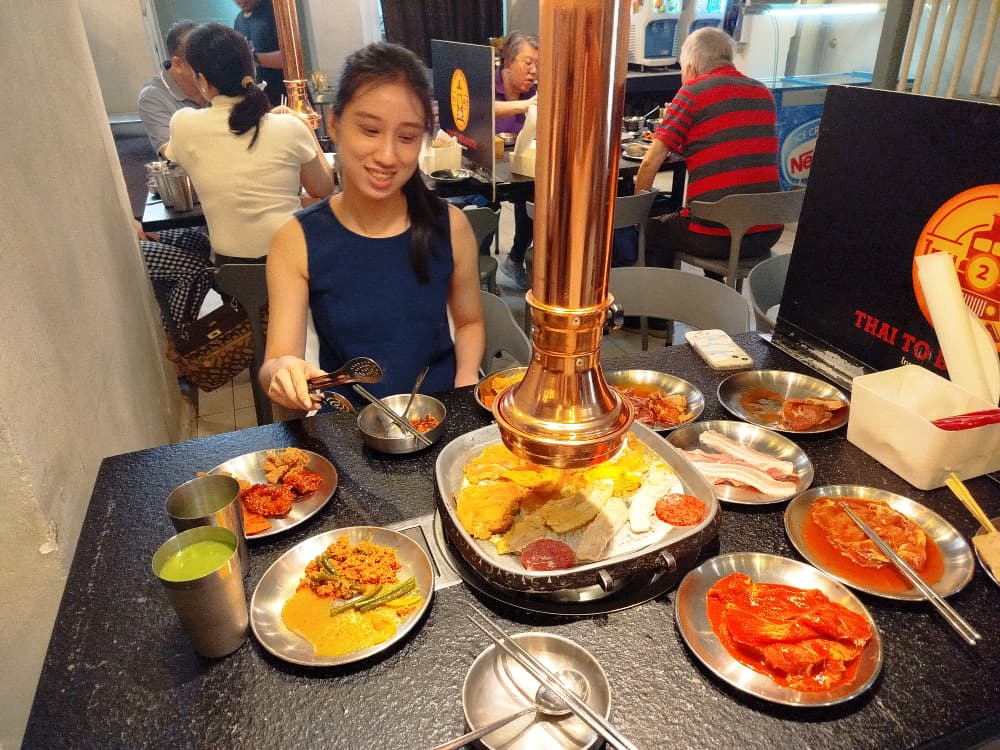

2025年6月2日 — 初遇的火花
那天，我主动帮你完成毕业项目的问卷，还用Python写了coding，automate了800份response，再调整成bell-shaped graph，方便你在SPSS里分析。你轻声说了一句“谢谢”，简单却真挚，让我心里忽然一暖。或许就是从这一刻起，我们的故事好像就悄悄开始了。💻❤️
2025年6月4日 — 深夜的默契
我帮你安装了SPSS、Foxit PDF编辑器和Microsoft Office，还用AnyDesk远程调试电脑。我们从软件聊到生活小技巧，不知不觉到深夜。我打趣说自己是“软件王”，其实只是想让你多找我，哪怕多开一次Google Meet，也是一种默契朋友上的陪伴。🕯️😊
2025年6月5日 — 小玩笑，大温暖
凌晨时分，我们还在聊PDF的编辑功能，我教你合并文件，劝你别再用“I love pdf”。我们开始分享生活趣事和小秘密，那一刻，我感受到，我们的关系好像不只是“帮忙”，而是多了一份特别的默契。😄✨
2025年6月8日 — 一起解决难题
你说SPSS数据导入有问题，我建议别再手动输入，太浪费时间。于是我们约好在Google Meet一起解决。你称我为“救星”，但其实我更开心能帮到你。那种信任一点点建立起来，让我开始期待每一次和你聊天。💪💖
2025年6月10日 — 并肩作战
当你的Cronbach's alpha值过低（<0.5）让你焦急时，我很冷静地再次在Google Meet陪你一起调整数据，化解难关。你笑说“没有你就完了”，我却觉得，能在你需要时出现，是好像是一种说不出甜蜜的幸福。🖥️😍
2025年6月13日 — 互相扶持
我因为CGPA 3.4被拒绝面试，心里有点失落，就和你聊起找工作的事。你真心推荐了Jabil和Kulim FMD Drill，还说可以帮我内推。你仔细看我的简历，认真给我建议。那一刻，我感动又暗爽，因为有人愿意用自己的名义帮我。🤝💞
2025年6月21日 — 你的用心
你帮我把简历转发给Kulim的朋友，虽然有人说我的能力不适合机器编码，但你的努力让我很感动。后来我去参加CodeTrace面试，第一时间就想和你分享。你轻轻一句“加油”，却让我有了更多勇气。🌟😊
2025年8月9日 — 第一次约会计划
我们计划去吃韩式烧烤，选了“Thai to Busan”，因为你喜欢韩式但爸妈不常陪你吃。平时拒绝朋友全部关于韩国餐的我既然破例接受尝试了。我们聊起了美食、家庭传统和小时候的趣事。想到终于能和你面对面吃饭，前一晚我兴奋到睡不着。那时我只希望，通过更多的交谈，能慢慢确认：你是不是我一直等待的那个人。当天意外遇到隔壁班同学，他们喊我“Thomas”，我瞬间hang机，因为第一次和女生单独出来吃饭，哈哈，你那时还不是我女朋友，我都不知道怎么介绍！星期日其实是我故意不找你，希望你来找我聊天，你都没来找我聊天，结果还差一点以为我没戏了呢。🍲💓

2025年8月19日 — 心动的告白
今天，在我们普通闲聊中突然来一句：“愿不愿意做我的男朋友？”我又愣了一下，但心里早已（吃韩国餐的晚上后）喊着“愿意”。那天我刚好出席远方亲戚的丧礼，和长辈们在一起，所以没能在最合适的环境很好地回应你。但心跳的感觉告诉我，也许这就是我们的第一天。本来打算星期六约爬山，因为星期四有考试到下午，但又好像等不及了，主动地提早改到星期五爬山。就算昨天考试很疲劳，又好像变成“不要紧”去了。💕😍
2025年8月22日 — 期待好多天的相聚
Botani Garden 散步记：希望现在坐在公园凳子的我们是正在手牵手继续升温感情，步步高升。给我一个机会吧！💕😍
真心的话
我现在刚起步创业，还在大学读书，实习收入有限，只能勉强维持简单节俭的生活。你确定愿意和这样的我一起并肩奋斗，同甘共苦，携手走向未来吗？有时我会担心，你会不会在意我的处境。
我期待的另一半，是这样的人：
- 性格开朗、待人礼貌
- 孝敬长辈
- 消费节俭、愿意学习理财
- 体贴温柔
- 适度独立、我有时侯忙起来可能不能马上回复你（紧急事件除外）
- 有责任感
- 对感情专一、愿意追求天长地久
- 顾家贤惠，在未来感情上如果真的非常稳定后，愿意与我一起建立家庭，结婚生子
也许我的择偶要求显得有点多，可以说我在感情上比较谨慎吧。但这也是主要我至今依然单身的原因。💌
经过我这几个礼拜的观察，隐隐约约地发现你倒还蛮符合的。
未来 — 爱的冒险
我真的还蛮想和你一起看更多的风景，吃更多的美食，分享更多的笑声。无论是牵手散步，还是并肩追梦，我都希望未来的每一天，都能和你一起书写属于我们的幸福。我们的爱情故事，才刚刚开始，是不是真的呢？有点不太敢相信哈哈。芸芸~~ 🌈💫